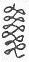
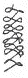

| みじかい木ぺん | |
| 宮沢 賢治 | |
| (2012) | |
みじかい木ぺん
宮沢賢治
キッコの村の学校にはたまりがありませんでしたから雨がふるとみんなは教室で遊びました。ですから教室はあの水車小屋
みたいな古臭
い寒天
のような教室でした。みんなは胆取
りと巡査
にわかれてあばれています。
「遁
げだ、遁げだ、押
えろ押えろ。」「わぁい、指
嚙
じるこなしだでぁ。」
がやがやがたがた。
ところがキッコは席
も一番前のはじで胆取りにしてはあんまり小さく巡査にも弱かったものですからその中にはいりませんでした。机
に座
って下を向
いて唇
を嚙
んでにかにか笑
いながらしきりに何か書いているようでした。
キッコの手は霜
やけで赤くふくれていました。五月になってもまだなおらなかったのです。右手のほうのせなかにはあんまり泣
いて潰
れてしまった馬の目玉のような赤い円いかたがついていました。
キッコは一寸
ばかりの鉛筆
を一生
けん命
にぎってひとりでにかにかわらいながら８の字を横
にたくさん書いていたのです。（めがね、めがね、めがねの横めがね、めがねパン、
くさりのめがね、
）ところがみんなはずいぶんひどくはねあるきました。キッコの机
はたびたび誰
かにぶっつかられて暗礁
に乗
りあげた船のようにがたっとゆれました。そのたびにキッコの８の字は変
な洋傘
の柄
のように変
ったりしました。それでもやっぱりキッコはにかにか笑
って書いていました。
「キッコ、汝
の木ペン見せろ。」にわかに巡査
の慶助
が来てキッコの鉛筆
をとってしまいました。「見なくてもい、よごせ。」キッコは立ちあがりましたけれども慶助はせいの高いやつでそれに牛若丸
のようにうしろの机の上にはねあがってしまいましたからキッコは手がとどきませんでした。「ほ、この木ペン、この木ペン。」慶助はいかにもおかしそうに顔をまっかにして笑って自分の眼
の前でうごかしていました。「よごせ慶助わあい。」キッコは一生けん命のびあがって慶助の手をおろそうとしましたが慶助はそれをはなして一つうしろの机
ににげてしまいました。そして「いがキッコこの木ペン耳さ入るじゃぃ。」と云
いながらほんとうにキッコの鉛筆を耳に入れてしまったようでした。キッコは泣いて追
いかけましたけれども慶助はもうひらっと廊下
へ出てそれからどこかへかくれてしまいました。キッコはすっかり気持
をわるくしてだまって窓
へ行って顔を出して雨だれを見ていました。そのうち授業
のかねがなって慶助は教室に帰って来遠くからキッコをちらっとみましたが、またどこかであばれて来たとみえて鉛筆のことなどは忘
れてしまったという風に顔をまっかにしてふうふう息
をついていました。
「わあい、慶助、木ペン返せじゃ。」キッコは叫
びました。「知らなぃじゃ、うなの机さ投
げてたじゃ。」慶助は云いました。キッコはかがんで机のまわりをさがしましたがありませんでした。そのうちに先生が入って来ました。
「三郎
、この時間うな木ペン使
ってがら、おれさ貸
せな。」キッコがとなりの三郎に云いました。
「うん、」三郎が机の蓋
をあけて本や練習帖
を出しながら上
のそらで答えました。
課業
がすんでキッコがうちへ帰るときは雨はすっかり晴れていました。
あちこちの木がみなきれいに光り山は群青
でまぶしい泣
き笑
いのように見えたのでした。けれどもキッコは大へんに心もちがふさいでいました。慶助
はあんまりいばっているしひどい。それに鉛筆
も授業
がすんでからいくらさがしてももう見えなかったのです。どの机
の足もとにもあのみじかい鼠
いろのゴムのついた鉛筆はころがっていませんでした。新学期
からずうっと使
っていた鉛筆です。おじいさんと一緒
に町へ行って習字
手本や読方の本と一緒に買って来た鉛筆でした。いくらみじかくなったってまだまだ使
えたのです。使えないからってそれでも面白
いいい鉛筆なのです。
キッコは樺
の林の間を行きました。樺はみな小さな青い葉
を出しすきとおった雨の雫
が垂
れいい匂
がそこらいっぱいでした。おひさまがその葉をすかして古めかしい金いろにしたのです。
それを見ているうちに、
（木ペン樺
の木に沢山
あるじゃ）キッコはふっとこう思いました。けれども樺の木の小さな枝
には鉛筆ぐらいの太さのはいくらでもありますけれども決
して黒い心がはいってはいないのです。キッコはまた泣
きたくなりました。
そのときキッコは向
うから灰
いろのひだのたくさんあるぼろぼろの着物
を着た一人のおじいさんが大へん考え込
んでこっちへ来るのを見ました。（あのおじいさんはきっと鼠捕
りだな。）キッコは考えました。おじいさんは変
な黒
い沓
をはいていました。そしてキッコと行きちがうときいきなり顔をあげてキッコを見てわらいました。「今日学校で泣
いたな。目のまわりが狸
のようになっているぞ。」すると頭の上で鳥がピーとなきました。キッコは顔を赤くして立ちどまりました。
「何を泣いたんだ。正直に話してごらん。聞いてあげるから。」
鳥がまた頭の上でピーとなきました。するとおじいさんは顔をしかめて上を向
いて「おまえじゃないよ、やかましい、だまっておいで」とどなりました。
すると鳥はにわかにしいんとなってそれから飛
んで行ったらしくぼろんという羽の音も聞え樺
の木からは雫
がきらきら光って降
りました。「いってごらん。なぜ泣いたの。」
おじいさんはやさしく云
いました。「木ペン失
ぐした。」キッコは両手
を目にあててまたしくしく泣きました。「木ペン、なくした。そうか。そいつはかあいそうだ。まあ泣くな、見ろ手がまっ赤
じゃないか。」
おじいさんはごそごその着物
のたもとを裏返
しにしてぼろぼろの手帳
を出してそれにはさんだみじかい鉛筆
を出してキッコの手に持
たせました。キッコはまだ涙
をぼろぼろこぼしながら見ましたらその鉛筆は灰色
でごそごそしておまけに心の色も黒でなくていかにも変
な鉛筆
でした。キッコはそこでやっぱりしくしく泣いていました。「ははああんまり面白
くもないのかな。まあ仕方
ない、わしは外に持
っていないからな。」おじいさんはすっと行ってしまいました。
風が来て樺の木はチラチラ光りました。ふりかえって見ましたらおじいさんはもう林の向
うにまがってしまったのか見えませんでした。キッコはその枝
きれみたいな変な鉛筆を持ってだまってかくしに入れてうちの方へ歩き出しました。
次
の日学校の一時間目は算術
でした。キッコはふとああ木ペンを持っていないなと思いました。それからそうだ昨日
の変な木ペンがある。あれを使
おう一時間ぐらいならもつだろうからと考えつきました。
そこでキッコはその鉛筆を出して先生の黒板
に書いた問題
をごそごその藁紙
の運算帳
に書き取
りました。
48
×62
＝ 「みなさん一けた目のからさきにかけて。」と先生が云
いました。「一けた目からだ。」とキッコが思ったときでした。不思議
なことは鉛筆がまるでひとりでうごいて96
と書いてしまいました。キッコは自分の手首だか何だかもわからないような気がして呆
れてしばらくぼんやり見ていました。「一けた目がすんだらこんどは二けた目を勘定
して。」と先生が云
いました。するとまた鉛筆がうごき出してするするっと288と二けた目までのとこへ書いてしまいました。キッコはもうあんまりびっくりして顔を赤くして堅
くなってだまっていましたら先生がまた「さあできたら寄
せ算をして下さい。」と云いました。またはじまるなと思っていましたらやっぱり、もうただ一いきに一本の線もひっぱって2976と書いてしまいました。
さあもうキッコのよろこんだことそれからびっくりしたこと、何と云っていいかわからないでただもうお湯
へ入ったときのようにじっとしていましたら先生がむちを持
って立って「では吉三郎
さんと慶助
さんと出て黒板
へ書いて下さい。」と云いました。〔キッコは筆記帳
をもってはねあがりました。〕そして教壇
へ行ってテーブルの上の白墨
をとっていまの運算
を書きつけたのです。そのとき慶助は顔をまっ赤
にして半分立ったまま自分の席
でもじもじしていました。キッコは9
の字などはどうも少しなまずのひげのようになってうまくないと思いながらおりて来たときようやく慶助が立って行きましたけれども問題
を書いただけであとはもうもじもじしていました。
先生はしばらくたって「よし」と云いましたので慶助は戻
って来ました。先生はむちでキッコのを説明
しました。
「よろしい、大へんよくできました。」キッコはもうにがにがにがにがわらって戻って来ました。（もう算術
だっていっこうひどくない。字だって上手
に書ける。算術帳とだって国語帳とだって雑作
なく書ける）
キッコは思いながらそっと帳面
をみんな出しました。そして算術帳国語帳理科帳とみんな書きつけました。すると鉛筆
はまだキッコが手もうごかさないうちにじつに早くじつに立派
にそれを書いてしまうのでした。キッコはもう大悦
びでそれをにがにがならべて見ていましたがふと算術帳と理科帳と取りちがえて書いたのに気がつきました。この木ペンにはゴムもついていたと思いながら尻
の方のゴムで消そうとしましたらもう今度
は鉛筆がまるで踊
るように二、三べん動
いて間もなく表紙
はあとも残
さずきれいになってしまいました。さあ、キッコのよろこんだことこんないい鉛筆をもっていたらもう勉強
も何もいらない。ひとりでどんどんできるんだ。僕
はまず家へ帰ったらおっ母
さんの前へ行って百けたぐらいの六
かしい勘定
を一ぺんにやって見せるんだ、それからきっと図画だってうまくできるにちがいない。僕はまず立派
な軍艦
の絵を書くそれから水車のけしきも書く。けれども早く耗
ってしまうと困
るなあ、こう考えたときでした鉛筆が俄
かに倍
ばかりの長さに延
びてしまいました。キッコはまるで有頂天
になって誰
がどこで何をしているか先生がいま何を云
っているかもまるっきりわからないという風でした。
その日キッコが学校から帰ってからのはしゃぎようと云ったら第一
におっかさんの前で十けたばかりの掛算
と割算
をすらすらやって見せてよろこばせそれから弟をひっぱり出して猫
の顔を写生
したり荒木又右エ門
の仇討
のとこを描
いて見せたりそしておしまいもうお話を自分でどんどんこさえながらずんずんそれを絵にして書いていきました。その絵がまるでほんもののようでしたからキッコの弟のよろこびようと云ったらありませんでした。
「さあいいが、その山猫
はこの栗
の木がらひらっとこっちさ遁
げだ。鉄砲打
ぢはこうぼかげだ。山猫はとうとうつかまって退治
された。耳の中にこう云う玉入っていた。」なんてやっていました。
そのうちキッコは算術も作文もいちばん図画もうまいので先生は何べんもキッコさんはほんとうにこのごろ勉強のために出来るようになったと云
ったのでした。二学期
には級長
にさえなったのでした。その代
りもうキッコの威張
りようと云ったらありませんでした。学校へ出るときはもう村中の子供
らをみんな待
たせて置
くのでしたし学校から帰って山へ行くにもきっとみんなをつれて行くのでうちの都合
や何かで行かなかった子は次
の日みんなに撲
らせました。ある朝キッコが学校へ行こうと思ってうちを出ましたらふとあの鉛筆
がなくなっているのに気がつきました。さあキッコのあわて方ったらありません。それでも仕方
なしに学校へ行きました。みんなはキッコの顔いろが悪
いのを大へん心配
しました。
算術
の時間でした。「一ダース二十銭
の鉛筆を二ダース半ではいくらですか。」先生が云いました。みんなちょっと運算
してそれからだんだんさっと手をあげました。とうとうみんなあげました。キッコも仕方
なくあげました。「キッコさん。」先生が云いました。
キッコは勢
よく立ちましたがあともう云えなくなって顔を赤くしてただもう〔以下原稿なし〕
底本：「イーハトーボ農学校の春」角川文庫、角川書店
１９９６（平成8
）年3
月25
日初版発行
底本の親本：「新校本 宮澤賢治全集」筑摩書房
１９９５（平成7
）年5
月
入力：ゆうき
校正：noriko saito
２００９年8
月23
日作成
２０１１年11
月24
日修正
青空文庫作成ファイル：
このファイルは、インターネットの図書館、青空文庫（http://www.aozora.gr.jp/）で作られました。入力、校正、制作にあたったのは、ボランティアの皆さんです。